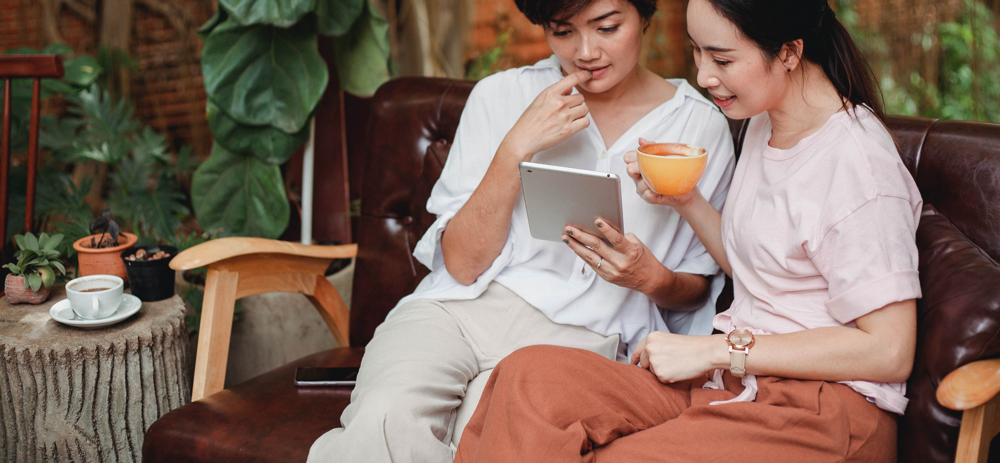

COFFY CAFE
We're a small local coffee shop with heart. We want to provide the Grey Lynn area with the best coffee experience possible with only the freshest ingredients.


We truly believe in supporting local and we're willing to roll up our sleeves and do something about it rather than just talk.
All of the food you'll find at Coffy Cafe is made with local ingredients and all of our coffee is roasted in house. The beans we use are grown right here in Aotearoa which is what gives them that unique 'green' taste.
